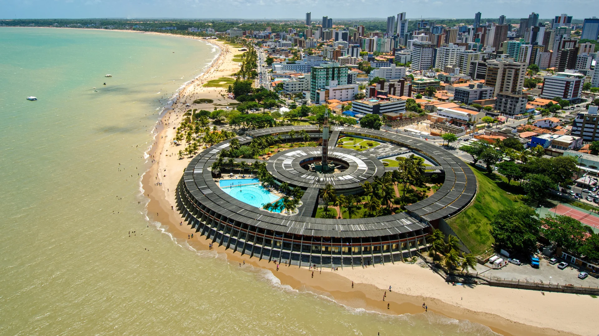

A Paraíba é um estado localizado na região Nordeste do Brasil, conhecido por sua rica cultura, belezas naturais e patrimônio histórico. Sua capital, João Pessoa, é uma das cidades mais antigas do país e destaca-se por suas praias paradisíacas e centro histórico bem preservado. O estado é famoso pelo São João de Campina Grande, considerado a maior festa junina do mundo, e por manifestações culturais como o coco de roda, a ciranda e o xaxado. A culinária paraibana é rica e diversificada, com pratos típicos como a buchada de bode, cuscuz, carne de sol e bode guisado. Além disso, a Paraíba possui um setor de turismo em crescimento, atraindo visitantes tanto pelas suas belas praias quanto por destinos históricos como o Vale dos Dinossauros, no sertão do estado.
 Voltar